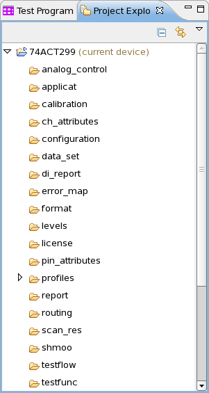

Project Explorer view
The Project Explorer view is part of the Setup perspective and provides a hierarchical view of the device directories.
In the Project Explorer view you add (import) or remove devices to your workspace and activate the device you are currently working on.

In this view you can:
- Navigate to the elements of test method projects
- Open and edit a class source file in the editor view
- Create new projects and class source files
- Manage existing projects, class source files, and methods (cut, paste, delete, move or rename)
- Build the test method shared library by compiling your sources
- Import and remove external test method projects to/from the explorer
Right-click any file in the Project Explorer view to open a shortcut menu that allows you to perform operations such as copying, moving, creating new files, or comparing files with each other.
The toolbar of the Project Explorer view contains the following icons:
Icon |
Function |
|---|---|
Collapses all file trees. |
|

|
Toggles whether the Project Explorer view selection is linked to the active editor. When this option is selected, changing the active editor will automatically update the Project Explorer view selection to the resource being edited. |

|
Provides menu items for sorting and filtering files, creating and selecting working sets. |
Functional changes
- Introduced before SmarTest 6.3.2
- SmarTest 6.5.3: The Navigator view is renamed as Project Explorer view.